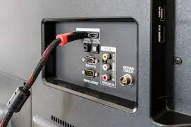
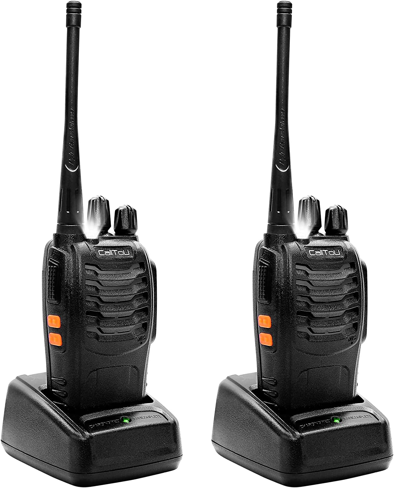

MEDIOS DE CONEXIÓN
Medios
Introducción
Hoy en día, vivimos en un mundo donde todo está conectado: desde nuestros teléfonos y computadoras hasta dispositivos inteligentes en el hogar. Aquí es donde entran en juego los medios de conexión, que son los canales que permiten que la información fluya entre dispositivos en una red. En esta página, te explicaremos de manera sencilla los diferentes tipos de medios de conexión, cómo funcionan y dónde se utilizan.
¿Qué es la Capa Física?
La Capa Física es la primera capa del modelo OSI (Open Systems Interconnection). Se encarga de la transmisión física de datos entre dispositivos de red. Básicamente, esta capa es responsable de enviar bits (1s y 0s) a través de un medio físico, como cables o señales inalámbricas. En pocas palabras, transforma los datos digitales en señales físicas (eléctricas, ópticas o electromagnéticas) para que puedan viajar de un lugar a otro.
Funciones Principales
Características
I. Unidades básicas de datos:
Trabaja con bits. No entiende de paquetes, segmentos o frames (estas son funciones de capas superiores).
II. Tipo de transmisión:
Define si los datos se envían de forma:
- Simplex: En un solo sentido.
- Half-duplex: En ambos sentidos.
- Full-duplex: En ambos sentidos al mismo tiempo.
Ejemplo: Televisión por cable
Ejemplo: Walkie-talkie
Ejemplo: Teléfono
III. Protocolos y estándares comunes:
Ethernet (IEEE 802.3):
- Es el estándar más utilizado para redes de área local (LAN).
- Define cómo los datos se transmiten a través de cables (como par trenzado y fibra óptica).
Conectores y medios:
- RJ45 para par trenzado.
- LC, SC, o ST para fibra óptica.
Wi-Fi (IEEE 802.11):
- Estándar para redes inalámbricas (WLAN).
- Define cómo las ondas de radio se usan para transmitir datos.
Rango:
- 2.4 GHz y 5 GHz, con la banda de 6 GHz en Wi-Fi 6E.
USB, Bluetooth, DSL:
- Otros estándares para transmisión física.
Componentes
- Todos
- Medios físicos de transmisión
- Equipos de red
- Conectores

{kind=link}
{kind=link}
{kind=link}
{kind=link}
{kind=link}
{kind=link}